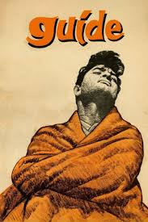
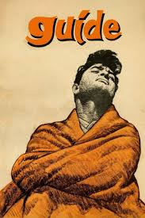

Indian cinema, a vibrant tapestry of cultures and languages, began its journey in 1913 with the silent film Raja Harishchandra by Dadasaheb Phalke, marking the birth of a cinematic legacy. Over the decades, Indian cinema has become one of the largest and most influential film industries in the world, producing over 2,000 films annually across diverse languages and genres. During the golden era of the 1950s and 1960s, filmmakers like Guru Dutt with masterpieces such as Kaagaz Ke Phool redefined cinematic storytelling through poetic visuals and poignant narratives. From the grandeur of *Mughal-e-Azam* to the action-packed tales of *Sholay*, Indian films have celebrated timeless themes of love, valor, and social transformation. Today, icons like *Dilwale Dulhania Le Jayenge* continue to resonate, reflecting the enduring legacy of Indian cinema's journey from celluloid to global acclaim.
The golden era of the 1950s and 1960s saw the emergence of legendary filmmakers like Guru Dutt, whose cinematic masterpiece Kaagaz Ke Phool is celebrated for its hauntingly poetic storytelling and innovative use of light and shadow. Other stalwarts such as Raj Kapoor with films like Awaara and Bimal Roy with socially conscious films like Do Bigha Zamin captured the soul of India, portraying themes of love, struggle, and hope. The period also witnessed the rise of powerful performances by actors such as Dilip Kumar, Nargis, and Meena Kumari, who became synonymous with the golden age of Bollywood.